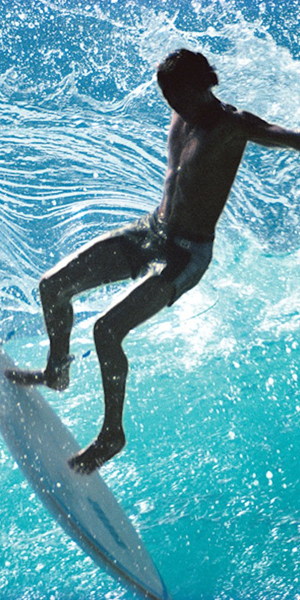

S U R F I N G

Surfing is one of my favorite activities. What I love the most about it is that you don't need to be great to enjoy it, you just need to show up. Sometimes it's cold, sometimes it's crowded, sometimes it's scary- but it's always fun. The ocean, the adrenaline rush, being in control, then in no control at all... For me, it's been a great way to clear up my mind, specially these past months. I'd recommend it to anyone looking for a new outdoor hobby.
I first started surfing back in Barcelona, but it was hard because the conditions there are not great (either 1 ft or rough storm, no inbetween). Ever since I moved to Los Angeles I've been able to go out pretty much every week. Besides the fun, it's also been a great way to discover the California coastline. There's beautiful spots all around.
I also find a lot of inspiration in the world of surfing. I love browsing through the work of artists/photographers like Jeff Divine, Raymond Pettibon, Will Adler or Ty Williams, or reading the books of William Finnegan, Gerry Lopez or Aj Dungo. I believe each one of us experiences the ocean in a different way, but there's a common theme in a lot of these works: how small we are vs the ocean. It really helps put things in perspective.